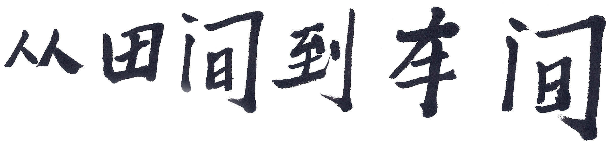
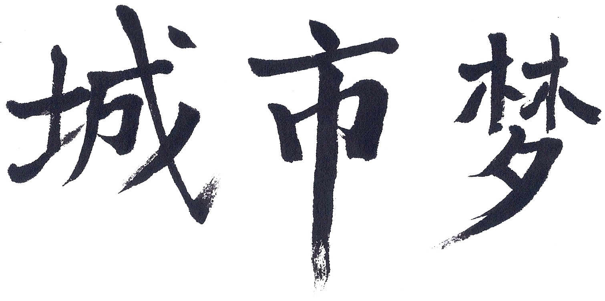
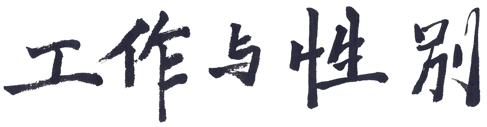

Before the sun rises, Pei Adi leaves for work. She walks on a tree-lined path past other farmers’ homes to reach the field where she harvests grass with other women her age. Squatting or sitting on low wooden stools, these farmers lean in to tug swaths of grass from the parched August soil with their gloved hands. This crop will become instant greenery along highways and high-rise buildings that signal China’s rapid growth. Adi’s back-bending work begins at 5:30 on summer mornings to avoid the torrid midday sun. After hours of labor then a mid-day break at home, Adi works until 5:30, though on some days she stays an hour more and earns an extra 10 RBM ($1.50), her hourly pay.
Farming is what Adi knows. When Mao Zedong ruled from 1949 to 1976, farming was what China’s workers did. For a time, Adi and her husband, Jin Lixing, left the fields and baked bricks. They lived in a shabby cave dwelling an hour’s walk from Xixiashu Town, where each was born and still live. They did this work to feed their two children whom they’d left behind in the care of grandparents. At the end of each month, they brought home small portions of pork for their son and daughter. It was the only meat they had to eat.
“It’s the selfless love of parents,” says Jin Shan, their granddaughter. She’s describing a time unlike any she’s ever known.
When older Chinese talk about their past, they often use the phrase chi ku (eating bitterness) so a listener can taste their emotion. Older generations trust that grueling, monotonous work is the best path to accomplishment; enduring hardship is highly praised, a strived-for virtue rooted in Confucian values. It’s upsetting for elders to see young Chinese, raised in smaller families in times of rising wealth, neglecting this approach to work and school. Yet as an assembly line worker in his 30s told a Reuters’ reporter, “very few of them [younger fellow workers] can eat bitterness.” Instead, some quit when work gets tough. China’s one-child policy, observers contend, has produced a generation of “little emperors.”
In the 1980s, Chinese leader Deng Xiaoping encouraged rural residents to populate the cities of industry he was building. He beckoned them with the promise of a “warm and full stomach.” First sons, then daughters, discarded the only future they knew as farmers. Trading that known hardship for the unknowns of city life, many of these migrant workers did exhausting, repetitive work on factory assembly lines. In time, young people hollowed out their hometowns in what remains human beings' largest internal migration. Left-behind elders cared for the children.
This “floating population” (liudong renkou) still seeks prosperity in China’s ever-changing economy. Sleeping on floor-to-ceiling bunk beds in dormitories or squished into makeshift arrangements in windowless basement rooms, rural migrants form separate communities in places where they can’t be official residents. Their rural hukuo, the registration every citizen has, makes them ineligible for social benefits. If they bring their children, they could not attend public schools.
In the mid-1990s, Adi’s son, Jin Jianru, and his wife, Chen Liuhong, headed north to work as migrant tailors. They left Shan, their seven-month-old daughter, with her paternal grandparents. Adi cut back on her work hours to bring Shan to school and greet her when she returned. When Shan’s parents moved back to Xixiashu, Shan was nine years old. Soon she’d be boarding at a junior middle school – leaving them little time to bond as a family. Her parents used their savings to set up a store in Xixiashu’s business district.

Adi’s husband worked full time as a farmer for many years, starting the day he quit school after second grade. He left the fields when factories came to town and he could earn more money as an ironworker. Other men his age did, too. This shift left mostly older women to farm this land. It is a major reason why rural women’s earnings compared with men’s declined steadily. In 1990, rural women earned, on average, nearly 80 percent of what men did. Today they’re paid just 56 percent of what rural men get for their work.
Land reform in the late 1990s added to rural women’s misfortune; they lost the few land rights they’d had in marriage, divorce, and widowhood. Today women work the land, but men largely determine its allocation. Typically males inherit land within families and men allocate and manage land and adjudicate land disputes. When a woman marries a man from another town, “local custom” will be used to obliterate any claim the woman had to land in her birthplace; then, men in her husband’s village rarely acknowledge her claim to his land. Without a claim to land, a wife is left with no safety net when they are divorced or widowed. These current practices are leading to even fewer rural women holding a claim to land than even a decade earlier. A few women are taking their land claims to court to try to have national laws that forbid this practice be used to put the land in their name.
Adi surpassed China’s statutory retirement age more than a decade ago without missing a day on the farm. That age is 50 for women (55, if she works in a white-collar profession) and 60 for men, though efforts are underway to push both ages higher. As a farmer, she pays no heed to this Beijing dictate. Why should she? She doesn’t have a pension or the kind of state-run safety nets that many city workers do. She keeps on farming even when members of her family say they want her to stop. When that day finally does come, she and Lixing will rely on their son, Jianru, for financial support. Jianru knows that filial piety obligates this care. It’s why he planted 100 trees near their home; Lixing tends the trees as an investment to pay dividends when needed.
Adi was 22 when she got married and permanently rooted her life in Xixiashu Town. At 22, their granddaughter Shan wears a hard hat when she trains for a construction job many kilometers away from Xixiashu. Not so many years ago those jobs were reserved for men.
When Shan’s father was born in 1971, his family chose the Mandarin character for “construction” as his aspirational name. He’d be part of the generation to build the new China. Such notions were tabled during the Cultural Revolution, but after nearly a decade as migrant workers, Jianru and his wife, Liuhong, are selling steel for local construction at their store in Xixiashu. Around them, steel-girded factories pop up where earthen buildings stood when Adi and Lixing were born in 1947 – two years before the People’s Republic of China was founded. Almost 70 years later, their son’s daughter Shan, whose name means “pretty” is being trained in the work her father was destined to do.
Shan explains why she chose to study construction at her university. Just like many of today’s American students, she wants to draw as direct a line as possible from what she studies to a good-paying job.
“Many of my parents’ friends do construction work,” Shan says, “and it’s easy for them to find jobs.”
Still, people seem curious about why a girl would choose this occupation. “They say the work is for boys, not girls,” Shan says. “But I don’t think so.”
She hopes to work as an on-site construction manager. How challenging will it be to earn the respect of construction workers who are mostly men? “I think if my words are right, I don’t think they will disagree with me,” Shan says in a voice that doesn’t exude confidence.
“Do you know any women in construction?” she’s asked. “I’ve seen some who are older,” she replies. “Most are men. Very few women.”
Day Dawns
Shan’s grandfather wheels his motorbike from the house’s front room just as Shan starts the family’s laundry. It’s a household job daughters usually do, and in this household Shan is the daughter. Her grandparents raised her and now she wants to help them whenever she can. It’s her selfless way of showing love.
First, Shan places the household’s red basin in the entryway and fills it with clothes. Lixing drew water from the nearby well so Shan would have it to pour on the clothes. Shan squats, balancing on her toes-turned-out, feet flattened. Muscles strengthened by years of such use support her weight. Facing the fields, she positions the tub squarely between her knees. Each time she leans forward to scrub her grandparents’ pants and shirts, Shan sees the sun rise a bit more. She also sees a farmer spraying the hip-high grass from a big blue plastic box strapped to his back.
“Men do that work,” Shan says, “Women could not carry it.”
Dirt from field and factory clouds the red tub’s water as Shan presses down hard on the clothes, rubbing them across a ribbed metal board. She wrings the clothes dry with hard twists of her wrists. She walks a few steps to toss the filthy residue on the ground just outside the front door.
At neighboring homes married women with young children – or only a son – do this same red-tub job, along with the bulk of the housework. If they had a daughter old enough, she’d be scrubbing outside each morning. After these women hang the clean clothes to dry in the wind, they’ll go to work. For some, a walk down a narrow road brings them to the factory where they will operate ear-splitting machines all day.
When Shan is at her parents’ apartment in town, she twists knobs on their washing machine to do the laundry as air-conditioning cools her. Modern appliances in their kitchen also mean less work for Shan. Even so she likes being with her grandparents when she can. To her their house is home. “I sweep floors for my grandparents and I do other housework,” she says. “Sometimes I can prepare meals for them.” To cook, the stove must be fed with straw. Shan talks about how she wants to care for Adi and Lixing as they get older. But if her job is far away from Xixiashu or she marries a man whose family lives in a different town, then caring for them will become her mother’s full responsibility, as their daughter-in-law.
One afternoon Shan and her grandpa teach Jennie – an American adoptee who has come back to her “hometown” to get to know girls her age who grew up here – the ancient art of red-tub laundry. Jennie soon finds out that it’s not like putting socks to soak in the sink by turning on the faucet and pouring in a capful of Woolite. Shan’s grandpa begins by showing her how to hoist a bucket of water from the outside well. As Shan squats near the red tub, Jennie tries to mimic her. As grandpa sees Jennie teeter, he goes to the kitchen to retrieve a well-worn low stool and offers their guest a seat. Neither Shan’s foot balancing nor bent-back scrubbing comes naturally to Jennie.
It’s August. In a few weeks Shan will leave Xixiashu to begin her vocational program at Nantong University. In the meantime, Shan and Jennie hang out with Zheng Fan, a childhood friend of Shan’s who has been on the vocational track for the past few years. It’s a common route for rural students. She and Shan were not together in school during their high school years; Shan’s higher score on the senior middle school (high school) entrance exam kept her on the academic path through 12th grade. Fan’s lower score directed her toward vocational study. Earlier this summer Shan found out that her low gaokao (college entrance exam) score ruled out an academic university seat for her. So now both will attend vocational universities, though different ones.
Fan’s parents, who are factory workers, live with her grandmother in Xixiashu. Fan’s grandfather died when her father was a teenager. Sadness visited her family again when Fan’s older brother died of a brain tumor at age five. Growing up as her parents’ only child, Fan imagined she’d become a doctor who’d care for children like her brother, or a kindergarten teacher because she likes little children. As a child, her parents’ friends asked her to tell them her dreams and she “would announce them loudly,” Fan says. “As I got older, when people ask what my dreams are I am stunned. I don’t know what to say. I can only imagine going to an office doing some flat and boring job all day.” Now in her late teens, she realizes “it was just a fantasy. Childhood dreams are really just that, childhood dreams. As I get older I realize that a few pieces of paper – zhongkao (the high school entrance exam) and gaokao (the college entrance exam) – alter our futures forever.”
Fan’s low score on the zhongkao reset her possibilities. Her parents urged her to focus on a path of study leading to a government job. They wanted for her what they didn’t have themselves: job security, wage stability and a government pension. Following their guidance, Fan majored in Customs Declaration and International Freight. Without a hint of remorse, Fan acknowledges that her actions “revolve around my parents’ beliefs and standards.” They are, she says, “the most important people in the world.” Fan’s highest goal is to please them, and to do this means it’s likely she’ll return to her rural town to marry, raise children and care for her elders.
Learning the customs trade, Fan also found out how hard it is to be hired in sought-after government jobs. When she got to Changzhou University’s vocational program, Fan concentrated on studying business English to improve her prospects for a job in international freight. By working hard on her studies and excelling in internships, she hopes to better her long odds of attaining the secure job that her parents want for her. “Nowadays there’s a saying in the first cities (Shanghai, Beijing, Guangzhou, Shenzhen) that people identify themselves by money,” Fan says. “In second cities (like Changzhou), they identify themselves by who their daddy is.”
Through generations Fan’s family have been farmers. Now her mom and dad are workers in rural factories. They lack clout and connections to ease her way into a different kind of job. “What about families who don’t have money or a good name?” Fan muses, before she responds to her own question. “One’s own hard work is most important. Self-reliance. Personal perseverance. Depend only on yourself to choose each step very carefully, and then meticulously complete each step. Then you will be satisfied and your parents will be satisfied knowing you are independent.” Still, she senses these ingredients are not always enough. “Fate is very important,” she adds.
 Farm to Factory
Liu Liping, a neighbor of Shan’s grandparents, works in a factory in Xixiashu. One afternoon Shan brings the video camera we gave her to the factory to show Jennie how local married women earn their wages.
The factory’s weed-strewn grounds and dilapidated buildings give the impression of being deserted decades ago. Walk inside and the pulsating sound of metal banging metal punishes the ears. None of the women wear earplugs. Liping sits in front of a bulky old machine and moves her hands fluidly in a rapid, repetitive cycle. Her job requires her to place two rubber discs together and feed them into the machine that adheres and reshapes them with the banging sound. Hers is the first of the three mechanized steps that produce a small audio component. On another assembly line in China, a different worker will put what she’s made into a digital device.
After watching Shan’s video on a TV in her hotel room in Changzhou, Jennie decides she wants to visit the factory. A few days later at the factory, Liping invites Jennie to sit at her machine. After demonstrating her task, she lets Jennie try. Using Liping’s metal hook, Jennie lifts the finished product from the hot machine. Shan greets Jennie’s smile with one of her own. “You can make money now in China,” she jokes with her American friend.
No one works in this factory now. In early 2015, the buildings were bulldozed so the government could widen a road. Shan heard about this change when she came home for Lunar New Year. It’s also when she learned that Liping, her husband and young son had moved to Changzhou, a sprawling city of some five million people 25 kilometers away. “Her son will go to a new school that is better than the school in Xixiashu,” Shan says, explaining why their move signals progress for the family. She knows nothing else about Liping’s new city life. “I only know the government needs development,” she says, “and that factory was so poor.”
Along Xixiashu’s wider roads, the homes in her grandparents’ village of Meilin have been spruced up with a fresh coat of white paint; some have decorative designs. In China, when a house gets a paint job it’s said to “put on clothes and hat.” In this Potemkin-like village makeover, the government allocated no funds to make any changes inside of the homes. In an aerial view that Shan sent, she circled Adi and Lixing’s painted home, showing the trees planted by her father, who also worked as a housing contractor in Meilin’s “reform.”
In June 2013 just before Jennie visited Xixiashu, China’s leaders had released plans calling for the relocation of 250 million rural residents into cities by 2025. In rural towns, persuasion to leave arrives in the form of bulldozers that raze factories and homes and carve out new highways. Two ancient temples spared Meilin’s residents from having their village bulldozed. Instead, Changzhou used its funds to transform Meilin into the first village in which its “main industry is agricultural recreation and tourism,” according to this article. Homes were touched up and attractions, such as blueberry fields and old-style bridges and walkways along its waterways, were added with the goal of attracting tourists, whose spending would revitalize the local economy. Residents often are resettled into high-rise apartment buildings, some of which are built on former farmland. Similar efforts are underway in other old towns in a rural poverty initiative that the Chinese government calls “All-for-one Tourism Zones.”
Living in their prettified home, Adi and Lixing become sightseeing ornamentation of what it was like to farm this land. Patches of farmland are fenced as relics of a village becoming a leisure-time destination for city tourists. Plans call for a large plum tree park, blueberry-picking farm and golf range, with a fishing area along its cleaned-up Yanshou River, according to Meilin’s Party leader. Cultural diversions include its 500-year-old Confucian temple, 200-year-old Dong Lin temple and traditional opera building. When its transformation is complete, a new community center will exist in Meilin so that “kids and old people can find activities to do.”
Stagnating wages have pushed sons and daughters out of villages like Meilin for decades. Shan’s father and mother left Xixiashu as migrant workers in 1995 when they could not afford to buy milk to feed their month-old baby. Liuhong’s mother had to buy the milk for them. When her father, Jianru, was introduced to people in Beijing, he and his wife, Liuhong, decided to move there for work. They lived in a tiny basement apartment and worked on their desktop sewing machine by day and slept under the desk at night. When Shan was a toddler and they came home for Lunar New Year, she didn’t recognize them.
Owning a mom-and-pop business in Xixiashu doesn’t mean they consider their lives a success. The bitterness of their migrant years stays with them. Only if Shan’s life turns out significantly better than theirs will they feel successful. That’s why when Shan’s low gaokao score ruled out the chance of attaining a university degree they were angry with her. She’s their only child, so their expectations are high. Their family’s fortunes rest with her doing well. As time goes by, they start to feel more hopeful as they see that Shan is studying hard at her vocational university and doing well in her construction internship. Besides finding a good-paying job, however, her parents expect Shan to also “marry well.” Ideally this means to a man who owns his home, comes from a well-off family, and demonstrates prospects for good earnings.
 City Dreams
In this prosperous Eastern province of Jiangsu, China’s young are better educated than their parents were, especially the daughters. Children who now graduate from college have fathers and mothers who didn’t finish middle school. Though there are millions of fewer young women than men in China due to its one-child policy, more women earn university degrees than do men. Migrant jobs and cramped dormitory rooms might have typified their parents’ grueling lives. But after decades of rapid economic growth, young people, including those in Jiangsu province’s rural towns such as Xixiashu, plan to earn salaries that meet their family obligations with money left over to spend on what makes them happy.
Many Chinese university students imagine working overseas one day. “I want to go to Japan and to America. I want to work around the world,” says Yuan Mengping, a young woman who grew up in Xiaxi Town and guided Maya, another adoptee who grew up in America, during her visit “home.” (Maya was abandoned in Xiaxi when she was three days old.) “Because life is so short I want to enjoy mine,” Mengping says. “I don’t know when my life dreams will come true. I’m working hard for it.”
Soon after Maya went back to America, Mengping began her final year at Changzhou University. By the next spring, she was the first member of her family to graduate with an academic university degree. She majored in business Japanese but devoted much effort to improving her English, too. After graduation, she took a sales position at a Changzhou golf shop. Wanting to leave Changzhou, she applied online for jobs. When a golf store at a driving range in Shanghai offered her one, she took it. (She likes being around golf, even if she can’t yet play the game.) By September, she had settled into an apartment and a new life in Shanghai.
“I want to live far away from my parents so I can be stronger,” Mengping says. “I must learn how to live alone.” She knows it’s important to be in a bigger city since it is the only way that she can improve her job prospects. At one time she’d imagined managing a hotel, so a sales job like the one she has made sense. However, because employers often like to keep attractive young women like her in customer-friendly jobs, it could be challenging for her to advance, even if she works hard.
Mengping knows her mother worries about her being on her own in the city. In part it’s because she’s concerned her daughter won’t find a young man to marry. Many of the girls her daughter’s age in Xiaxi Town are married. “I came here to explore. I want to enjoy my life a lot, not share it with other people, so my mother is so afraid,” Mengping says. “She thinks I am getting older and older and I will always be alone. I say to her don’t be worried. I will find a boyfriend.” She hasn’t yet.
In Shanghai, Mengping shares an apartment with other young workers from rural towns. She has her own bedroom and bathroom and pays 2000 RMB (about $310) in rent each month, which is half of her salary. Wages are higher here than they are in Changzhou, but expenses are higher too, so Mengping works long hours without overtime pay and studies every book about golf she can find so she can be better at selling the golf clubs. That’s the only way she earns a commission.
Most buyers are Korean or Japanese so, as is customary in stores serving foreigners, the Korean golf storeowner asked Mengping to use an English name. At work, she is Deanna. When she goes back to Xiaxi each month, she is Mengping again for those three days. Besides her name, she’s found that the stresses of city life and her job are changing her. When Maya was with her in Xiaxi Town, Mengping smiled all the time and told Maya how happy she was to have her loving, supportive family and parents who embraced her ambitions. The world to her was a beautiful place, and on China’s popular social media channel WeChat Mengping named herself Sunshine.
“I don’t know how to describe my mind now,” Mengping says after a few months of working in Shanghai. “It has changed a lot from when I was in school. The world is not as very beautiful as I used to think it was. I want people to be like those I used to be with. I’ve had to change a lot and get used to things here because I don’t have the power to change them.”
Shanghai’s faster pace of life has toughened her, but it hasn’t made her happy. At the golf shop, she’s been given no set schedule for work. Often she ends up working 12-hour days. Each morning she opens and cleans the store, then all day tries to please its customers, only to be told some evenings that she needs to work even more hours after the store closes some evenings. “I can’t have much free time like I had in Changzhou or in the school when I could do what I like,” she says. “Sometimes I have to do more work than the others, but I don’t get paid any more. I don’t have so much time to rest.” Nor does she ever receive praise. “They don’t say that I am a good person. They just say ‘you are the youngest so you have to do that,’” Mengping explains. “So I have to learn how to deal with it and be stronger. And not just cry.”
Mengping has worked at this job for a year and a half. She wants to find a different one. “I feel what I am doing has become meaningless.” She feels defeated especially when her best efforts are undercut by one of her colleagues who “always says something about me in front of the boss even when I don’t do anything wrong and he doesn’t do it any better,” she says. “I think that’s so bad.”
 Work and Gender
Finding a better job in this city will be tough for Mengping to do. She’ll need to leap two hurdles that urban applicants don’t. First, there is her rural hukuo, then, her gender. Young men (especially those with an urban hukuo) move ahead faster into the higher-status jobs. Ideally, Mengping would like a job in which she can put her dual language skills and university degree to effective use, as she advances her career ambitions. Even if she is able to find another job, the odds are good that she won’t be paid what her urban colleagues are and she’ll be expected to work harder than they do.
The authors of a January 2016 journal article “Gender Inequalities in Employment and Wage-Earning Among Internal Labour Migrants in Chinese Cities” conclude that “migrants with rural hukou status have a smaller chance of participation in the job market, and they earn lower wages than those with urban hukou, regardless of education advantage.” Not just lower wages affect rural workers; they “usually surrender to unequal treatment and discriminatory practices for their jobs and earnings,” the authors write, and “with increasing feminization of migration, the gender gap in wages has widened considerably across big cities and urban areas of China.” On average urban women workers earn 67.3 percent of what urban men do. In rural regions, women earn 56 percent of what men do. In the countryside and in cities, it is harder for women to be hired in good-paying, higher-status jobs and to be promoted.
Unequal treatment based on gender begins with employment ads. “At some companies and factories, they are only looking for the boys,” says Mengping. “And some just want beautiful girls to be the symbol of the company.” A typical ad for a sales job might require the applicant to be a “pretty woman with height no less than 1.7 meters.” In the 1960s, such ads were prohibited in the United States. But gender-specific job listings remain common practice in China despite the Fair Employment Articles of 2008 Employment Promotion Law. Its provisions state that “no worker seeking employment shall suffer discrimination on the grounds of ethnicity, race, gender or religious belief” and “with the exception of certain types of work or positions designated by the state as unsuitable for women, no employment unit, when recruiting new employees, shall refuse to recruit women by reason of gender or impose higher employment criteria for women.”
In China’s Constitution “Equal rights for women” appears as Article 48. Yet as Feng Yuan, a Chinese women’s rights scholar and advocate, told Maya and Jennie, “some job advertisements say ‘no women, we only want men.’ Others tell a woman she should not be married if she wants to apply for our job.” In China, there are jobs that many people believe women shouldn’t do.
Employers also routinely post ads telling women who are not finished with their childbearing not to apply. This directly contradicts China’s 2008 Employment Promotion Law. In its Fair Employment section Article 27 reads: “No employment unit, when recruiting a female employee, shall include a clause in the employment contract imposing marriage or childbirth restrictions on the employee.” At job fairs, there is greater scrutiny of women’s personal lives; interviewers routinely ask women about their childbearing plans. This line of questioning has intensified due to China’s new two-child policy. News stories also describe husbands and in-laws pressuring mothers to quit their jobs to have another child. Observers of these trends are increasingly concerned that gender discrimination in the workplace is worsening.
Employers in China lure men to work for them by advertising the company’s “beautiful women,” as a perk of the job. These women often hold university degrees in such majors as civil engineering, but in the workplace they are called “programmer motivators” whose job it is to tend to the needs of male workers, such as massaging their shoulders. The companies justify the use of gender-specific language in ads by claiming, among other reasons, that women aren’t suited for business travel. Of course, in the global economy, jobs involving travel are often a steppingstone to senior positions.
In 2018, Human Rights Watch released a scathing report, “‘Only Men Need Apply’: Gender Discrimination in Job Advertisements in China,” that describes how in job recruitment advertisements civil and corporate employers discriminate against women. As the report’s summary explains, “Beyond unlawfully depriving women of job opportunities, these job ads reflect deeply discriminatory views about women: that they are less intellectually, physically, and psychologically capable than men, or that they are not fully committed to their jobs because some will eventually leave their positions to have a family.”
Rarely do employees in China use their Constitutional and legal guarantees to take an employer to court. In 2012, a college graduate filed China’ first gender discrimination lawsuit after a Beijing company refused to consider her for an assistant’s job, saying only men could apply. The job required no special physical strength. It took more than a year for a court in Beijing to even accept her case; at first, it refused citing no precedent. In the end, this young woman settled out of court in early 2014 for 30,000 RMB (about $5,000), thus averting a court decision.
Not until November 2014 did any court in China actually issue a ruling in an employment gender discrimination case. When another female college graduate was refused an entry-level clerk’s job at a Hangzhou cooking school, she followed the Beijing woman’s lead and brought her complaint to court. “I didn’t understand why a clerk’s position would be open only to men,” the plaintiff told a reporter. She had called the school to ask why and was informed that the job required travel and “some physically demanding tasks such as carrying the school director’s suitcases.” After she told them that traveling wasn’t a problem for her and assured them that she was “physically quite strong,” her application was rejected. She appealed in person at the school. Rebuffed, she went to court.
The judge ruled that gender was the deciding factor and awarded her compensation. She then filed a follow-up lawsuit demanding an apology from the company. In a similar case in Guangzhou, the court ordered a seafood restaurant chain that was found guilty of gender discrimination to pay a fine and publish a public apology to Gao Xiao, the woman whom the company refused to hire as a trainee chef. The company did not comply. Gao decided to pursue a lawsuit against the local authorities for “failing to enforce laws against gender discrimination in job recruitment.”
The act of bringing a gender discrimination case to court exacts a heavy toll on a woman – and her family. Doing so has earned plaintiffs visits from police followed by threats from authorities, who contact family members, too. Harassment extends to landlords, often resulting in eviction.
These women’s complaints involved private companies, but discrimination happens in government hiring, too. In September 2015, Beijing’s Shunyi People’s Court held its final of three hearings in a gender discrimination case brought by a 24-year-old female plaintiff against the nation’s largest postal service. Here’s how the All-China Women’s Federation described her ordeal, using a pseudonym, Xiaolu, as plaintiffs in gender discrimination cases in China do:
“Though the company said in the recruitment notice clearly that they only need male couriers, Xiaolu persuaded them to allow her to work for two days as a probationary period. After two days of work, Xiaolu received praise from other colleagues; the head of the branch office even agreed to sign contract with her in October. However, after a one-month wait, Xiaolu received a reply from the head's assistant, saying that the headquarters refused to recruit female couriers.”
It took only one day for the court to accept her case. By early November, she’d won her case. The court ordered that compensation be paid for her psychological pain and trauma: the payment was 2,000 RMB ($310). Her case set precedent in being the first time a court in China awarded compensation for discrimination by a state-owned enterprise. Though she was disappointed in not receiving the public apology she’d requested, Ma Hu, her real name, expressed elation and shock at the verdict. As she told a reporter with the All-China Women’s Federation, "at the beginning I never imagined I would win this lawsuit, because Beijing Post is a government position. To be honest, I thought I wasn't powerful enough.”
Ma Hu wrote about her life in a story she entitled “You Tell Me Not To Be Such a Mule.” She told of her rural family upbringing as one of two sisters. “Because of our gender my father cannot hold his head high in the village,” she wrote. “This type of circumstance is only too common in our village, but we were lucky because since our parents did not have a son, we both got to receive an education.” Scoring well on the gaokao enabled her to attend college.
“A girl being able to make decisions for herself is a beautiful and admirable thing, regardless of whether the choices she makes are good or bad,” Ma wrote. “When I wanted a job, people weren't comparing which girl was stronger, but rather which applicant was male. I was really naïve. I'm sorry: please don't say that this discrimination is to ‘protect’ me; I have always been able to protect myself up until now. You don't need to think it's strange that I want to be in the express post, or doubt that I really want this position. I'm the type of feminist who always climbed in through windows instead of using doors when I was a kid. But don't worry, it was all ground-level.”
In a survey taken in Jiangsu province, where Mengping and Shan grew up, 80 percent of women respondents said that they had experienced discrimination in recruitment and employers were explicit in stating a preference for men. Women referred to bold phrases in advertisements such as “male graduates” only; this practice existed at government departments, state-owned enterprises, private companies and foreign-owned companies.
In some government jobs, women applicants are given mandatory gynecological exams and, if hired, required to provide details about their monthly cycle. A wrongly timed pregnancy can lead to punishment. A notice circulated on social media told of a city credit cooperative telling women employees to schedule their pregnancies so they did not “unduly influence” operations of the company. Failure to comply would result in a fine and loss of promotion.
Gender discrimination doesn’t vanish once women are hired. A 2011 survey by All-China Women’s Federation, charged with overseeing women’s wellbeing in China, found that 92 percent of women polled had encountered discrimination at work. In this same poll, female university students were asked if “graduates of their sex” had fewer opportunities than men students did; 56.7 percent said yes. Also, if workers believe their employers are discriminating against them, the existing laws are not adequate to provide the necessary remedies in the courts. “It’s difficult to win discrimination cases in China, and even if you win, the compensation is very low,” says Liu Xiaonan, an associate professor who specializes in discrimination and gender equality at China University of Political Science and Law in Beijing.
As a woman who is approaching her mid-20s, it’s fairly certain potential employers will ask Mengping about her marriage plans. Right now she has none to the chagrin of her family in Xiaxi. “I am saving money but I have a long way to go. I want to go back to college to learn more things,” Mengping says. “But first I want to go to Japan, if I can find work there.” She pauses. “Or maybe just go to Japan. I think I’m only dreaming, but I am working hard for it.”
Will she be able to find a better job? “Yes, I think I can in Shanghai,” Mengping says. “I just learn to be stronger, save money, and do a better job.”
Does she plan on returning to Xiaxi Town before she is 28, an age that stretches the norm for a rural woman to be married?
“I don’t know,” Mengping says. “None of us know what will happen tomorrow.”